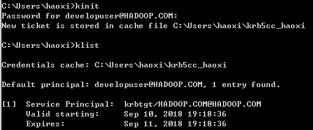
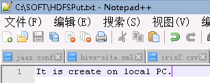
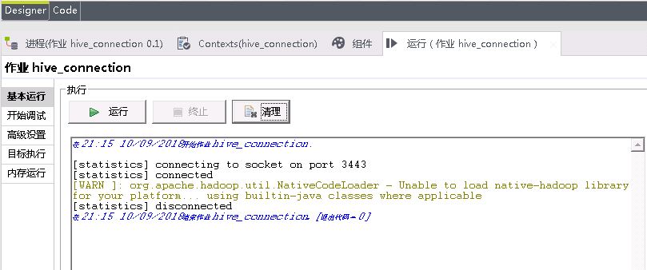
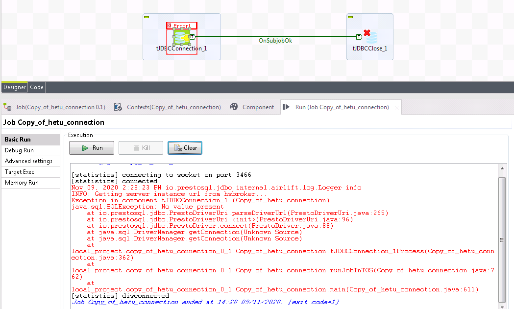

Talend对接FusionInsight¶
适用场景¶
Talend 6.4.1 ↔ FusionInsight HD V100R002C80SPC200 (HDFS/HBase/Hive)
Talend 7.0.1 ↔ FusionInsight HD V100R002C80SPC200 (HDFS/HBase)
Talend 6.4.1 ↔ FusionInsight MRS 8.0 (HDFS/Hive/Hetu)
注：因为Talend 7.0.1版本bug，Hive组件无法在版本7.0.1中通过，对接hive组件使用Talend 6.4.1版本
安装Talend¶
操作场景¶
安装Talend 7.0.1
前提条件¶
- 已完成FusionInsight HD客户端的安装(可参考产品文档->应用开发指南->安全模式->配置客户端文件)
操作步骤¶
-
配置环境变量JAVA_HOME,Path
-
配置Kerberos认证 向FusionInsight HD集群管理员获取集群Kerberos的krb5.conf文件,把相应的krb5.conf文件重命名为 krb5.ini,并放到
C:\Windows目录下（Talend默认从此目录下查找）

- 下载TOS并修改TOS启动参数
在
https://www.talend.com/products/big-data/big-data-open-studio/下载TOS，创建连接zookeeper的jaas配置文件（如C:\developuser\jaas.conf），内容格式如下：Client { com.sun.security.auth.module.Krb5LoginModule required useKeyTab=true keyTab="c:/developuser/user.keytab" principal="developuser@HADOOP.COM" useTicketCache=false storeKey=true debug=true; }; - 启动TOS_BD，运行TOS_BD-win-x86_64.exe

安装必需的第三方库


Talend连接HDFS¶
操作场景¶
Talend中配置HDFS解析器，对的FI HD HDFS接口
前提条件¶
-
已经完成Talend 7.0.1的安装
-
已完成FusionInsight HD和客户端的安装，包含HDFS组件
HDFS Connection 操作步骤¶
- 添加tHDFSConnection组件，配置如下:

具体配置：
1: 选择Cloudera，版本为Cloudera CDH 5.8(YARN mode)
2: "hdfs://172.21.3.103:25000"
3: "hdfs/hadoop.hadoop.com@HADOOP.COM"
4: "developuser"
5: "C:/developuser/user.keytab"
6: "hadoop.security.authentication" -> "kerberos"
"hadoop.rpc.protection" -> "privacy"

HDFS Get 操作步骤¶
- 整个流程如图所示:

-
tHDFSConnection组件配置不变
-
tHDFSGet组件配置如下：

注意：测试前在集群HDFS文件系统上 /tmp/talend_test路径下已经传入文件out.csv，C:/SOFT为本地输出文件路径

- 测试结果：

到本地路径C:/SOFT下查看测试结果


HDFS Put 操作步骤¶
-
整个流程如图所示:
-
tHDFSConnection组件配置不变
-
tHDFSPut组件配置如下

注意：测试前在本地目录C:/SOFT下创建文件HDFSPut.txt, 内容如下：
It is create on local PC.

- 测试结果：

登录到集群查看测试结果：

Talend连接Hive¶
操作场景¶
Talend中配置JDBC解析器，对的FI HD Hive接口
前提条件¶
-
已经完成Talend 6.4.1的安装
-
已完成FusionInsight HD和客户端的安装，包含Hive组件
Hive Connection 操作步骤¶
- 对接Hive组件Talend版本需要6.4.1

- 整个流程如图所示:

- tHiveConnection组件配置如下
 注意：需要点击Distritution旁边的按钮来导入FusionInsight HD客户端Hive样例代码中的所有jar包，如果还有缺失的jar包，可用Talend自带的类库进行自动补全，或者也可以手动导入
注意：需要点击Distritution旁边的按钮来导入FusionInsight HD客户端Hive样例代码中的所有jar包，如果还有缺失的jar包，可用Talend自带的类库进行自动补全，或者也可以手动导入1: Custom-Unsuported 2: Hive2 3: "172.21.3.103:24002,172.21.3.101:24002,172.21.3.102" 4: "24002" 5: "default" 6: "developuser" 7: ";serviceDiscoveryMode=zooKeeper;zooKeeperNamespace=hiveserver2;sasl.qop=auth-conf;auth=KERBEROS;principal=hive/hadoop.hadoop.com@HADOOP.COM;user.principal=developuser;user.keytab=C:/SOFT/cfg/user.keytab"

- 测试结果：

Hive Create Table & Load 操作步骤¶
-
tHiveConnection组件配置保持不变
-
tHiveCreateTable组件配置如下

注意：需要点击编辑架构旁边的按钮来配置需要导入hive表的结构

- tHiveLoad组件配置如下：

注意：提前需要向hdfs文件存储系统/tmp/talend_test/路径下传入文件out.csv

out.csv文件内容如下：
1;EcitQU
2;Hyy6RC
3;zju1jR
4;R9fex9
5;EU2mVq
- tHiveClose组件配置如下:

- 测试结果：

在集群上检查传入的表createdTableTalend

Hive Input 操作步骤¶
- 整个流程如图所示:

-
tHiveConnection组件配置保持不变
-
tHiveInput组件配置如下：

注意：需要点击编辑架构旁边的按钮来配置hive表的结构

-
tLogRow组件使用默认配置
-
tHiveClose组件配置如下

- 测试结果：

Hive Row 操作步骤¶
- 整个流程如图所示:

-
tHiveConnection组件配置保持不变
-
tHiveRow组件配置如下

注意：需要点击编辑架构旁边的按钮来配置hive表的结构

- 测试结果：

连接到集群查看测试结果

Talend连接HBase¶
操作场景¶
Talend中配置HBase解析器，对的FI HD HBase接口
前提条件¶
-
已经完成Talend 7.0.1的安装
-
已完成FusionInsight HD和客户端的安装，包含HBase组件
HBase Connection 操作步骤¶
- 整个流程如图所示:

- 用eclipse导出FusionInsight HD客户端中Hbase样例代码中的LoginUtil类（样例代码路径如
C:\FusionInsightHD\FusionInsight_Services_ClientConfig\HBase\hbase-example）


-
在Talend里插入tHbaseConnection组件，点击组件进行设置

-
首先点击tHBaseConnection图标下面的组件按钮，选择版本为
Custom - Unsupported和Hadoop 2，再点击版本旁边的按钮导入jar包，需要导入的是上一步导出的hbase_loginUtil.jar以及FusionInsight HD客户端中Hbase样例代码hbase-example中引用的所有jar包，如果还有缺失的jar包，可用Talend自带的类库进行自动补全，或者也可以手动导入

hbase-example样例代码中lib目录下所有的jar包如下：

- 使用tLibraryLoad组件导入hbase_loginUtil.jar

点击 Advanced settings在Import中增加import com.huawei.hadoop.security.LoginUtil;

-
tHBaseConnection配置如下:

-
引入tJava组件用定制代码替代Connection组件

代码内容如下：
org.apache.hadoop.conf.Configuration conf = org.apache.hadoop.hbase.HBaseConfiguration.create();
System.setProperty("java.security.krb5.conf", "C:\\developuser\\krb5.conf");
conf.set("hadoop.security.authentication","Kerberos");
conf.addResource(new org.apache.hadoop.fs.Path("C:/SOFT/cfg/core-site.xml"));
conf.addResource(new org.apache.hadoop.fs.Path("C:/SOFT/cfg/hdfs-site.xml"));
conf.addResource(new org.apache.hadoop.fs.Path("C:/SOFT/cfg/hbase-site.xml"));
System.out.println("=====");
System.out.println(org.apache.hadoop.hbase.security.User.isHBaseSecurityEnabled(conf));
System.setProperty("java.security.auth.login.config", "C:/developuser/jaas.conf");
LoginUtil.setJaasConf("developuser", "developuser", "C:\\developuser\\krb5.conf");
LoginUtil.setZookeeperServerPrincipal("zookeeper.server.principal", "zookeeper/hadoop.hadoop.com");
LoginUtil.login("developuser", "C:/developuser/user.keytab", "C:/developuser/krb5.conf", conf);
globalMap.put("conn_tHbaseConnection_1", conf);

HBase Input Output 操作步骤¶
-
整个流程如图所示:

-
tLibraryLoad，tHBaseConnection，tJava配置不变
-
加入tFileInputDelimited组件配置如下：
注意需要点击编辑架构旁边的按钮，根据需要存入文件(out.csv)的格式定义列和类型

out.csv测试数据如下：- 加入tHBaseOutput组件配置如下：1;EcitQU 2;Hyy6RC 3;zju1jR 4;R9fex9 5;EU2mVq


注意需要点击编辑架构旁边的按钮编辑表的架构：

- tHBaseInput组件配置如下，需要注意的是同样需要点击编辑架构旁边的按钮配置表的结构

-
tLogRow组件使用默认配置
-
测试结果

检查集群创建的HBase表hbaseInputOutputTest
在集群上使用代码
hbase shell
scan 'hbaseInputOutputTest'


Talend连接Hetu¶
说明： talend 6.4.1对接mrs 8.0.2 的hetu组件
- connection配置：

注意：username 和 password全部删掉，不能有内容，带双引号“”都不可以，因为uri的配置为：
"jdbc:presto://172.16.10.131:24002,172.16.10.132:24002,172.16.10.133:24002/hive/default?serviceDiscoveryMode=zooKeeper&zooKeeperNamespace=hsbroker&deploymentMode=on_yarn&user=developuser&SSL=true&SSLTrustStorePath=E:/mrs_hetu_config/hetuserver.jks&KerberosConfigPath=E:/mrs_hetu_config/krb5.conf&KerberosPrincipal=developuser&KerberosKeytabPath=E:/mrs_hetu_config/user.keytab&KerberosRemoteServiceName=HTTP&KerberosServicePrincipalPattern=%24%7BSERVICE%7D%40%24%7BHOST%7D"
no value present的错误，或者是Connection property 'user' is both in the URL and an argument错误如下：
只配了User， password没有配：

报错：

user,password都配了且为空值：

报错：

- 启动jvm参数配置如下：

- 结果：